技术报告
Jingyuan Liu¹ Jianlin Su¹ Xingcheng Yao² Zhejun Jiang¹ Guokun Lai¹ Yulun Du¹
Yidao Qin¹ Weixin Xu¹ Enzhe Lu¹ Junjie Yan¹ Yanru Chen¹ Huabin Zheng¹
Yibo Liu¹ Shaowei Liu¹ Bohong Yin¹ Weiran He¹ Han Zhu¹ Yuzhi Wang¹
Jianzhou Wang¹ Mengnan Dong¹ Zheng Zhang¹ Yongsheng Kang¹ Hao Zhang¹
Xinran Xu¹ Yutao Zhang¹ Yuxin Wu¹ Xinyu Zhou¹* Zhilin Yang¹
¹ Moonshot AI ² UCLA
最近，基于矩阵正交化的 Muon 优化器（K. Jordan 等，2024）在小规模语言模型训练中取得了出色结果，但它扩展到更大模型的能力尚未得到证实。我们发现了扩展 Muon 的两项关键技术：（1）添加权重衰减；（2）仔细调整每个参数的更新尺度。这些技术使 Muon 无须调整超参数即可直接用于大规模训练。scaling law 实验表明，在计算最优训练下，Muon 的计算效率约为 AdamW 的 2 倍。基于这些改动，我们推出 Moonlight：一个使用 Muon、以 5.7T 个 token 训练的 3B/16B 参数混合专家（MoE）模型。与此前模型相比，我们的模型以少得多的训练 FLOPs 取得更好的性能，推进了当前的 Pareto 前沿。我们开源了内存最优且通信高效的分布式 Muon 实现。我们还发布预训练、指令微调和中间 checkpoint，以支持未来研究。
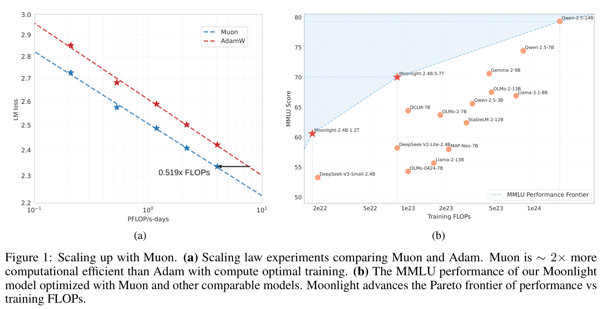
图 1：使用 Muon 扩展训练。（a）比较 Muon 与 Adam 的 scaling law 实验。在计算最优训练下，Muon 的计算效率约为 Adam 的 2 倍。（b）使用 Muon 优化的 Moonlight 模型与其他可比模型的 MMLU 性能。Moonlight 推进了性能与训练 FLOPs 之间的 Pareto 前沿。
* 通讯作者：zhouxinyu@moonshot.cn
arXiv:2502.16982v1 [cs.LG]，2025 年 2 月 24 日。
大语言模型（LLM）（OpenAI 等，2024；DeepSeek-AI 等，2024；Grattafiori 等，2024；Gemini Team 等，2024）的快速发展显著推动了通用人工智能的进展。然而，由于 scaling laws（Kaplan 等，2020；Hoffmann 等，2022），训练能力强大的 LLM 仍然需要密集计算和大量资源。优化器对高效且有效地训练 LLM 至关重要，Adam（Kingma 等，2015）及其变体 AdamW（Loshchilov 等，2019）是大多数大规模训练的标准选择。
优化算法的近期进展显示出超越 AdamW、提升训练效率的潜力（Liu 等，2024；K. Jordan 等，2024；Yuan 等，2024；Vyas 等，2025；X.-L. Li，2018a；X.-L. Li，2018b；Pooladzandi 等，2024；X. Li，2022；X.-L. Li，2024；Pethick 等，2025）。其中，K. Jordan 等（2024）提出 Muon，利用 Newton-Schulz 迭代对 gradient 动量正交化，并据此更新矩阵参数。Muon 的初步实验在小规模语言模型训练中展现了良好结果。然而，如该博客（K. Jordan 等，2024）所述，几个关键挑战仍未解决：（1）如何将基于矩阵正交化的优化器有效扩展到具有数十亿参数、以数万亿 token 训练的大模型；（2）如何在分布式环境中计算近似正交化；（3）这类优化器能否泛化到预训练和监督微调（SFT）等不同训练阶段。
本技术报告通过全面研究解决这些挑战。我们的工作以 Muon 为基础，系统识别并解决它在大规模训练场景中的局限。我们的技术贡献包括：
我们的全面实验证明，Muon 可以有效替代 AdamW，成为大规模 LLM 训练的事实标准优化器，在训练效率和模型性能两方面都有显著提升。基于这项工作，我们发布使用 Muon 训练的 16B 参数 MoE 模型 Moonlight，以及我们的实现和中间训练 checkpoint，以促进 LLM 可扩展优化技术的进一步研究。
Muon 优化器。Muon（K. Jordan 等，2024）是近期提出的优化器，用于优化可表示为矩阵的神经网络权重。在第 \(t\) 次迭代中，给定当前权重 \(W_{t-1}\)、动量 \(\mu\)、学习率 \(\eta_t\) 和目标 \(L_t\)，Muon 优化器的更新规则可表述如下：
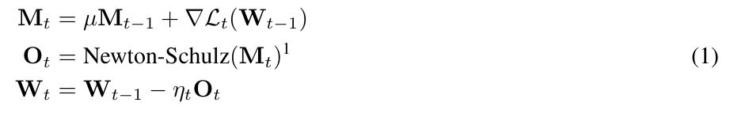
其中，\(M_t\) 是第 \(t\) 次迭代的 gradient 动量，在 \(t=0\) 时设为零矩阵。公式 1 采用 Newton-Schulz 迭代过程（Bernstein 等，2024），近似求解 \((M_tM_t^T)^{-1/2}M_t\)。令 \(U\Sigma V^T=M_t\) 为 \(M_t\) 的奇异值分解（SVD），则有 \((M_tM_t^T)^{-1/2}M_t=UV^T\)，这使 \(M_t\) 正交化。直观来说，正交化可以确保更新矩阵具有同构性质，防止权重仅沿少数占主导地位的方向学习（K. Jordan 等，2024）。
¹ 实践中，我们遵循 K. Jordan 等（2024），使用 Nesterov 式动量，将 \(\mu M_t+\nabla L_t(W_{t-1})\) 而非 \(M_t\) 输入 Newton-Schulz 迭代。
用于矩阵正交化的 Newton-Schulz 迭代。公式 1 通过迭代过程计算。开始时，令 \(X_0=M_t/\|M_t\|_F\)。随后在每次迭代 \(k\) 中，根据 \(X_{k-1}\) 按如下方式更新 \(X_k\)：
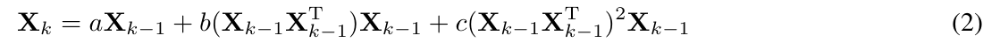
其中，\(X_N\) 是该过程迭代 \(N\) 步后的结果。这里 \(a,b,c\) 是系数。为确保公式 2 正确收敛，需要调整这些系数，使多项式 \(f(x)=ax+bx^3+cx^5\) 在 1 附近存在不动点。在 K. Jordan 等（2024）的原始设计中，系数设置为 \(a=3.4445,b=-4.7750,c=2.0315\)，以使迭代过程在初始奇异值较小时更快收敛。本工作沿用这一系数设置。
范数约束下的最速下降。Bernstein 等（2024）提出将深度学习的优化过程视为范数约束下的最速下降。从这个角度看，Muon 与 Adam（Kingma 等，2015；Loshchilov 等，2019）的差异可视为范数约束的差异。Adam 是在由 Max-of-Max 范数动态调整而来的范数约束下进行最速下降，而 Muon 提供的范数约束位于某个较大 \(p\) 所对应的 Schatten-p 范数的静态范围内（Franz，2024）。当公式 1 精确计算时，Muon 提供的范数约束将是谱范数。神经网络权重作为输入空间或隐藏空间上的算子使用，这些空间通常在局部是欧氏空间（Cesista，2024），因此权重的范数约束应是诱导算子范数（对权重矩阵而言即谱范数）。从这个意义上说，Muon 提供的范数约束比 Adam 更合理。
权重衰减。虽然 K. Jordan 等（2024）表明 Muon 在小规模训练中明显优于 AdamW，但我们发现，当扩展到以更多 token 训练更大模型时，其性能收益减小。我们观察到权重和层输出的 RMS 都持续增长到很大尺度，超过 bf16 的高精度范围，这可能损害模型性能。为解决这一问题，我们将标准 AdamW（Loshchilov 等，2019）的权重衰减机制引入 Muon²。
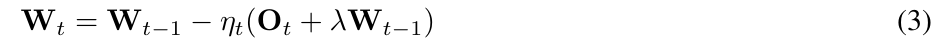
我们分别对具有和不具有权重衰减的 Muon 进行实验，以了解其对 LLM 训练动态的影响。根据第 3.2 节的 scaling law 研究，我们以 100B 个 token 训练一个 800M 参数模型（约为最优训练 token 数的 5 倍）。图 2 展示了使用 AdamW、原始 Muon（无权重衰减）以及带权重衰减的 Muon 训练模型的验证 loss 曲线。尽管原始 Muon 起初收敛更快，我们观察到一些模型权重随时间增长得过大，可能限制模型的长期性能。添加权重衰减解决了这个问题：结果表明，带权重衰减的 Muon 优于原始 Muon 和 AdamW，在过量训练区间达到更低的验证 loss。因此，我们将更新规则调整为公式 3，其中 \(\lambda\) 是权重衰减率。
一致的更新 RMS。Adam 和 AdamW（Kingma 等，2015；Loshchilov 等，2019）的一个重要性质是，它们维持约为 1 的理论更新 RMS³。然而，我们证明 Muon 的更新 RMS 随参数形状而变化，如以下引理所述：
引理 1。对于形状为 \([A,B]\) 的满秩矩阵参数，其理论 Muon 更新 RMS 为 \(\sqrt{1/\max(A,B)}\)。
证明见附录 A。我们在训练中监测 Muon 的更新 RMS，发现它通常接近上述理论值。我们指出，这种不一致性在扩展模型规模时可能造成问题：
² Muon 的原始实现未包含权重衰减。最近一项同期 Muon 工作加入权重衰减，并展示性能提升。参见此 commit和此讨论。
³ 由于 Adam 的 \(\beta_1<\beta_2\) 且 \(\epsilon>0\)，实际更新 RMS 通常小于 1。
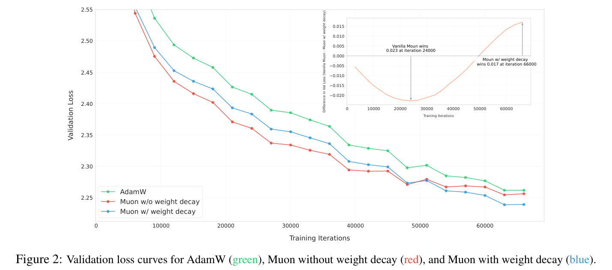
图 2：AdamW（绿色）、不带权重衰减的 Muon（红色）以及带权重衰减的 Muon（蓝色）的验证 loss 曲线。
为在不同形状的矩阵间维持一致的更新 RMS，我们提出将每个矩阵的 Muon 更新乘以其 \(\sqrt{\max(A,B)}\)，以抵消引理 1 的影响⁴。第 3.1 节的实验表明，这一策略有利于优化。
匹配 AdamW 的更新 RMS。Muon 被设计为更新基于矩阵的参数。实践中，AdamW 与 Muon 配合，用于处理 RMSNorm、LM head 和 embedding 参数等非矩阵参数。我们希望矩阵与非矩阵参数共享优化器超参数（学习率 \(\eta\)、权重衰减 \(\lambda\)）。
我们提出让 Muon 的更新 RMS 与 AdamW 相近。根据经验观察，AdamW 的更新 RMS 通常在 0.2 到 0.4 左右。因此，我们通过以下调整将 Muon 的更新 RMS 缩放到这一范围：
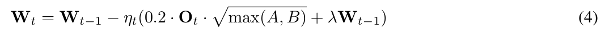
我们通过实验结果验证了这一选择（详见附录 A）。此外，我们强调，通过这一调整，Muon 可以直接复用为 AdamW 调好的学习率与权重衰减。
其他超参数。Muon 包含另外两个可调超参数：Newton-Schulz 迭代步数与动量 \(\mu\)。我们根据经验观察到，将 \(N\) 设置为 10 时，迭代过程产生的正交化结果比 \(N=5\) 更精确，但并未带来更好的性能。因此，为保证效率，本工作设置 \(N=5\)。我们没有观察到调节动量带来一致的性能收益，因此选用与 K. Jordan 等（2024）相同的 0.95。
ZeRO-1 与 Megatron-LM。Rajbhandari 等（2020）提出 ZeRO-1，将昂贵的优化器状态（例如主权重、动量）分片到整个集群。Megatron-LM（Shoeybi 等，2020）将 ZeRO-1 集成到其原生并行设计中。基于 Megatron-LM 完善的并行策略，例如张量并行（TP）、流水线并行（PP）、专家并行（EP）和数据并行（DP），ZeRO-1 的通信工作量可以由在整个分布式环境中聚合，减少为仅在数据并行组内聚合。
方法。ZeRO-1 对 AdamW 很高效，因为它按元素计算更新。然而，Muon 需要完整的 gradient 矩阵才能计算更新。因此，原始 ZeRO-1 不能直接应用于 Muon。
⁴ K. Jordan 等（2024）的原始实现将更新乘以 \(\sqrt{\max(1,A/B)}\)；如果所有矩阵的第二个维度相同，则除一个全局尺度因子外，它等价于我们的方案。Pethick 等（2025）和 You（2025）在与本工作同期的工作中讨论了更新缩放因子的类似问题。
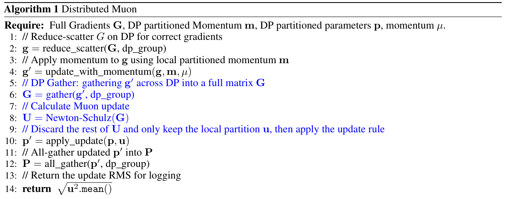
输入要求：完整 gradient \(G\)、按 DP 分片的动量 \(m\)、按 DP 分片的参数 \(p\)、动量 \(\mu\)。
g = reduce_scatter(G, dp_group)。g′ = update_with_momentum(g, m, µ)。G = gather(g′, dp_group)。U = Newton-Schulz(G)。p′ = apply_update(p, u)。P = all_gather(p′, dp_group)。我们为 Muon 提出一种基于 ZeRO-1 的新分布式方案，称为分布式 Muon。分布式 Muon 遵循 ZeRO-1，在 DP 上对优化器状态进行分片，并相较原始 ZeRO-1 AdamW 优化器引入两个额外操作：
分布式 Muon 的实现见算法 1。分布式 Muon 引入的额外操作以蓝色显示。
分析。我们从几个方面将分布式 Muon 与经典的基于 ZeRO-1 的分布式 AdamW（为简便起见，称为分布式 AdamW）进行比较：
在我们的分布式集群中训练大规模模型时，分布式 Muon 相比对应的 AdamW 没有明显延迟开销。我们即将发布一个 pull request，在开源 Megatron-LM（Shoeybi 等，2020）项目中实现分布式 Muon。
⁵ 如果启用 TP，分布式 Muon 需要在 TP 组上额外执行一次 bf16 TP gather。
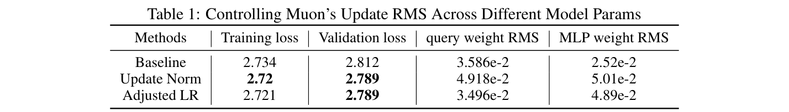
表 1：控制不同模型参数的 Muon 更新 RMS。
如第 2.2 节所述，我们希望所有矩阵参数的更新 RMS 相互匹配，并与 AdamW 的更新 RMS 匹配。我们实验了两种控制参数间 Muon 更新 RMS 的方法，并将其与仅维持和 AdamW 一致 RMS 的基线比较：
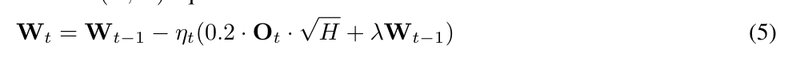
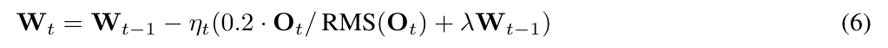
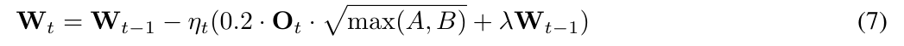
分析。我们设计实验以展示 Muon 更新 RMS 在早期训练阶段的影响，因为我们观察到，大规模模型训练很快就会出现意外行为。我们对第 3.2 节所述的小规模 800M 模型进行实验。当矩阵维度差异增大时，更新 RMS 不一致的问题更为突出。为突出这一问题并进一步研究，我们略微修改模型架构，用标准的两层 MLP 替代 SwiGLU MLP，使矩阵参数形状从 \([H,2.6H]\) 改为 \([H,4H]\)。我们评估模型的 loss，并监测几个参数的 RMS，具体为 attention query（形状 \([H,H]\)）和 MLP（形状 \([H,4H]\)）。在 20B token 的训练计划中完成 4B token 训练后，我们评估模型。从表 1 中，我们观察到几个有趣发现：
基于这些发现，我们选择成本更低的调整学习率方法用于后续实验。
为与 AdamW 公平比较，我们对一系列 Llama（Grattafiori 等，2024）架构的稠密模型开展 scaling law 实验。在优化器研究中，建立强基线至关重要。因此，我们遵循计算最优训练设置（Kaplan 等，2020），对 AdamW 的超参数进行网格搜索（网格搜索实验见附录 B）。模型架构和超参数详情见表 2。对于 Muon，如第 2.2 节所述，由于将其更新 RMS 与 AdamW 匹配，我们直接复用 AdamW 基线的最优超参数。
拟合的 scaling law 曲线见图 3，拟合方程详见表 3。如图 1a 所示，在计算最优设置下，Muon 仅需约 52% 的训练 FLOPs 即可匹配 AdamW 的性能。
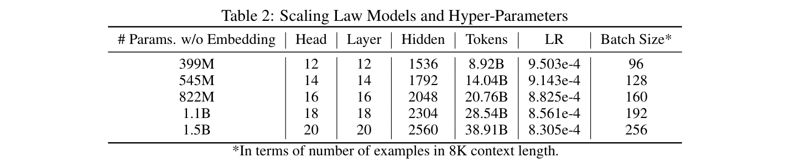
表 2：scaling law 模型和超参数。* batch size 以 8K 上下文长度的样本数表示。
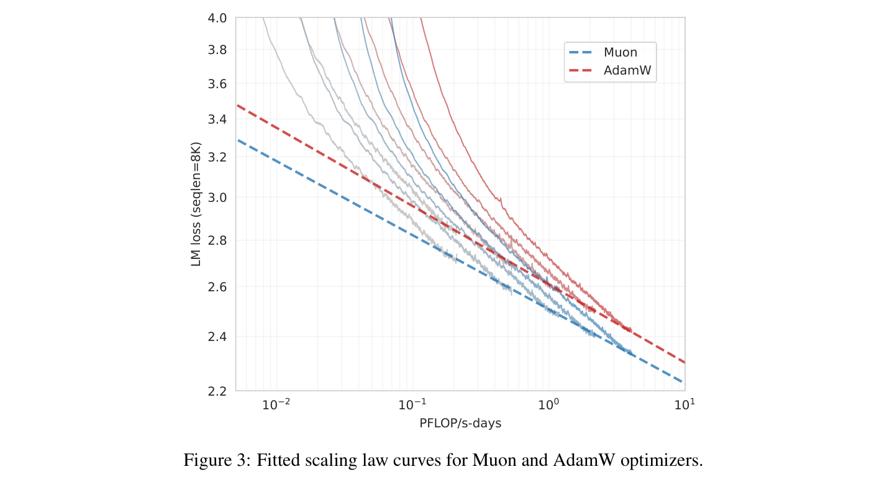
图 3：Muon 与 AdamW 优化器的拟合 scaling law 曲线。
模型架构。为在当代模型架构下评估 Muon，我们使用 deepseek-v3-small 架构（DeepSeek-AI 等，2024）从零开始预训练，因为该架构表现强劲，其原始结果可作为比较参照。我们的预训练模型具有 2.24B 激活参数和 15.29B 总参数（计入 embedding 时为 3B 激活参数、16B 总参数）。架构的细微修改详见附录 C。
预训练数据。我们的预训练数据详情见 K. Team（2025）。预训练的最大上下文长度为 8K。
预训练。模型分多个阶段训练。阶段 1 和 2 使用 1e-3 的 auxfree 偏置更新率，阶段 3 使用 0.0。所有阶段的权重衰减设为 0.1。模型训练的更多详情和讨论见附录 D。
表 3：scaling law 曲线的拟合参数。
评估基准。我们的评估涵盖四类主要基准，各自用于评估模型不同能力：
性能。我们将使用 Muon 训练的模型命名为“Moonlight”。我们将 Moonlight 与相近规模的不同公开模型进行比较。首先，在训练至 1.2T 个 token 时评估 Moonlight，并与以下架构相同且训练 token 数相近的模型比较：
对于 Moonlight 与 Moonlight-A，我们使用总计 5.7T 预训练中训练至 1.2T 个 token 的中间 checkpoint；此时学习率尚未衰减至最小，模型也尚未经历冷却阶段。
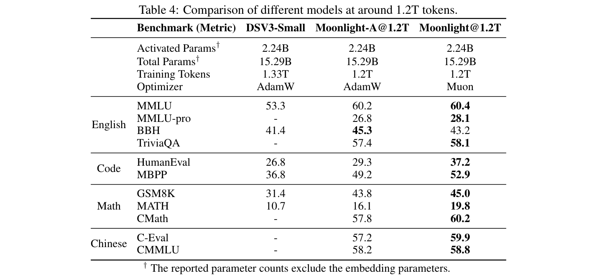
表 4：训练至约 1.2T 个 token 的不同模型对比。† 报告的参数数量不包含 embedding 参数。
如表 4 所示，使用 AdamW 训练的基线模型 Moonlight-A 相比相似公开模型表现强劲。Moonlight 的性能明显优于 Moonlight-A，证实了 Muon 扩展训练的有效性。我们观察到 Muon 特别擅长数学和代码相关任务，鼓励研究社区进一步研究这一现象。Moonlight 完整训练至 5.7T 个 token 后，我们将其与相近规模的公开模型比较，结果见表 5：
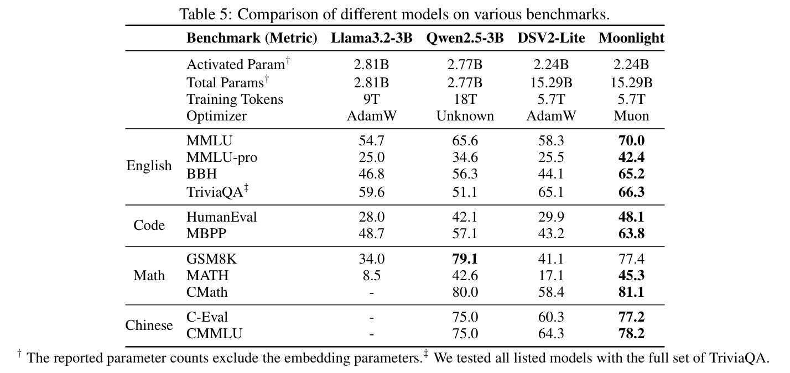
表 5：不同模型在各基准上的对比。† 报告的参数数量不包含 embedding 参数。‡ 我们在完整 TriviaQA 集上测试所有列出的模型。
如表 5 所示，Moonlight 优于使用相同 token 数训练、架构相近的模型。即使与使用显著更大数据集训练的稠密模型相比，Moonlight 也维持有竞争力的性能。详细比较见附录 E。图 1b 与附录 E 图 8 进一步比较了 Moonlight 与其他知名语言模型在 MMLU 和 GSM8k 上的性能⁶。尤其是，Moonlight 位于模型性能与训练预算之间的 Pareto 前沿，优于多种不同规模的其他模型。
为验证 Muon 能够沿更多不同方向优化权重矩阵的直觉，我们对使用 Muon 和 AdamW 训练的权重矩阵进行谱分析。对于奇异值为 \(\sigma=(\sigma_1,\sigma_2,\ldots,\sigma_n)\) 的权重矩阵，我们按如下方式计算其 SVD 熵（Alter 等，2000；Roy 等，2007）：
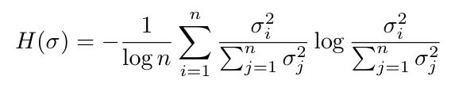
如图 4 所示，我们将以 1.2T 个 token 预训练期间、不同训练 checkpoint 中权重矩阵的平均 SVD 熵可视化。可以看到，在所有训练 checkpoint 和所有权重矩阵组中，Muon 的 SVD 熵均高于 AdamW，验证了 Muon 能为权重矩阵提供更多样的更新谱这一直觉。这种差异在用于专家选择的 router 权重中更明显，说明混合专家模型可能从 Muon 获得更多收益。
此外，我们将训练至 1.2T 个 token 的 checkpoint 中每个权重矩阵的奇异值分布可视化，如附录 F 所示。我们发现，对超过 90% 的权重矩阵而言，Muon 优化后的 SVD 熵高于 AdamW，为 Muon 探索多样优化方向的更强能力提供有力实验证据。
本节在 LLM 训练的标准 SFT 阶段对 Muon 优化器进行消融研究。结果表明，Muon 带来的收益在 SFT 阶段仍然存在。具体来说，同时使用 Muon 预训练和 Muon 微调的模型在消融研究中优于其他模型。然而，我们也观察到，当 SFT 优化器与预训练优化器不同时，使用 Muon 的 SFT 相比 AdamW 并未表现出明显优势。这表明仍有很大的进一步探索空间，我们将其留作未来工作。
⁶ 基线模型的性能指标和计算需求（FLOPs）来自 OLMo 等（2024）。
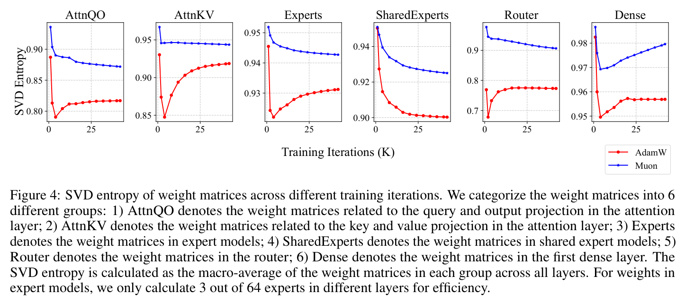
图 4：不同训练迭代中权重矩阵的 SVD 熵。我们将权重矩阵分为 6 组：（1）AttnQO 表示 attention 层中与 query 和输出投影有关的权重矩阵；（2）AttnKV 表示 attention 层中与 key 和 value 投影有关的权重矩阵；（3）Experts 表示专家模型中的权重矩阵；（4）SharedExperts 表示共享专家模型中的权重矩阵；（5）Router 表示 router 中的权重矩阵；（6）Dense 表示第一个稠密层中的权重矩阵。SVD 熵按每组跨所有层的权重矩阵宏平均计算。对专家模型权重，为提高效率，我们仅计算不同层中 64 个专家中的 3 个。
为进一步研究 Muon 的潜力，我们分别使用 Muon 和 AdamW 优化器微调 Moonlight@1.2T 与 Moonlight-A@1.2T。这些模型在开源 tulu-3-sft-mixture 数据集（Lambert 等，2024）上微调两个 epoch，该数据集包含序列长度为 4k 的数据。学习率采用线性衰减计划，从 \(5\times10^{-5}\) 开始逐渐降至 0。表 6 的结果突出显示了 Moonlight@1.2T 相比 Moonlight-A@1.2T 更好的性能。
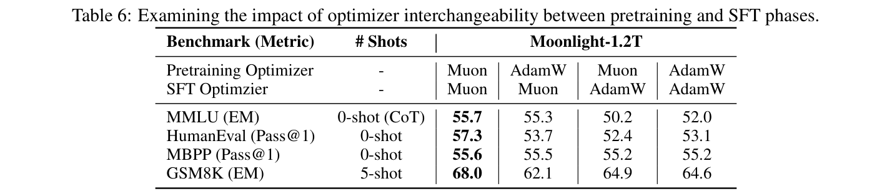
表 6：考察预训练与 SFT 阶段之间优化器可互换性的影响。
我们进一步将 Muon 应用于公开预训练模型的监督微调（SFT），具体为 Qwen2.5-7B base 模型（Yang 等，2024），使用开源 tulu-3-sft-mixture 数据集（Lambert 等，2024）。数据集按 8k 序列长度打包，我们采用余弦衰减学习率计划，从 \(2\times10^{-5}\) 开始，逐渐降至 \(2\times10^{-6}\)。结果见表 7。对比表明，Muon 微调模型的性能与 Adam 微调模型相当。这些结果说明，为达到最优性能，在预训练阶段应用 Muon 比在监督微调阶段应用更有效。
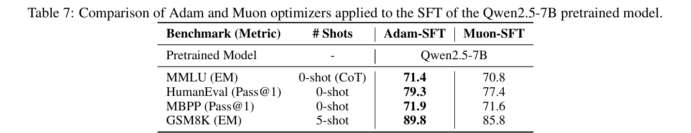
表 7：将 Adam 与 Muon 优化器应用于 Qwen2.5-7B 预训练模型 SFT 的比较。
未来研究存在若干可能方向，可以进一步探索并扩展当前发现。
将所有参数纳入 Muon 框架。目前，Muon 优化器与 Adam 优化器配合使用，部分参数仍由 Adam 优化。这种混合方案虽然可行，但也存在改进机会。将所有参数的优化完全整合到 Muon 框架内，是一个具有重要研究价值的课题。
将 Muon 扩展至 Schatten 范数。Muon 优化器可以解释为谱范数约束下的最速下降方法。考虑到 Schatten 范数广泛的适用性与多样性，将 Muon 扩展到一般 Schatten 范数是一个有前景的方向。这一扩展可能带来额外优化能力，并有望产生优于当前基于谱范数实现的结果。
理解并解决预训练与微调不匹配。实践中观察到的一个显著现象是，使用 AdamW 预训练的模型在使用 Muon 微调时性能次优，反之亦然。优化器不匹配显著妨碍有效利用大量 AdamW 预训练 checkpoint，因此需要严格的理论研究。准确理解其背后的机制，是设计稳健有效解决方案的必要条件。
本技术报告全面研究了 Muon 在 LLM 训练中的可扩展性。通过系统分析和改进，我们成功将 Muon 应用于一个使用 5.7 万亿 token 训练的 3B/16B 参数 MoE 模型。结果表明，Muon 可以有效替代 AdamW，成为大规模 LLM 训练的标准优化器，在训练效率和模型性能两方面具有显著优势。通过开源我们的实现、Moonlight 模型和中间训练 checkpoint，我们希望促进可扩展优化技术的进一步研究，并加快 LLM 训练方法的发展。
Alter, Orly, Patrick O. Brown 和 David Botstein。“用于全基因组表达数据处理与建模的奇异值分解”。载于 Proceedings of the National Academy of Sciences 97.18（2000），第 10101–10106 页。DOI：10.1073/pnas.97.18.10101。电子版：PDF。URL：原文。
Austin, Jacob 等。使用大语言模型进行程序合成。2021。arXiv:2108.07732 [cs.PL]。URL：https://arxiv.org/abs/2108.07732。
Bernstein, Jeremy 和 Laker Newhouse。旧优化器，新范数：选集。2024。arXiv:2409.20325 [cs.LG]。URL：https://arxiv.org/abs/2409.20325。
Bi, Xiao 等。“DeepSeek LLM：以长期主义扩展开源语言模型”。载于 arXiv 预印本 arXiv:2401.02954（2024）。
Cesista, Franz Louis。将深度学习优化器视为赋范空间中的最速下降。2024。URL：http://leloykun.github.io/ponder/steepest-descent-opt/。
Chen, Mark 等。“评估以代码训练的大语言模型”。载于（2021）。arXiv:2107.03374 [cs.LG]。
Cobbe, Karl 等。训练验证器以解决数学应用题。2021。arXiv:2110.14168 [cs.LG]。URL：https://arxiv.org/abs/2110.14168。
DeepSeek-AI。DeepSeek-V2：强大、经济且高效的混合专家语言模型。2024。arXiv:2405.04434 [cs.CL]。
DeepSeek-AI 等。DeepSeek-V3 技术报告。2024。arXiv:2412.19437 [cs.CL]。URL：https://arxiv.org/abs/2412.19437。
Franz, Louis Cesista。支持 Muon 的理由。2024 年 10 月。URL：https://x.com/leloykun/status/1846842887839125941（访问日期：2025-02-18）。
Grattafiori, Aaron 等。Llama 3 模型家族。2024。arXiv:2407.21783 [cs.AI]。URL：https://arxiv.org/abs/2407.21783。
Hendrycks, Dan, Collin Burns, Steven Basart 等。衡量大规模多任务语言理解。2021。arXiv:2009.03300 [cs.CY]。URL：https://arxiv.org/abs/2009.03300。
Hendrycks, Dan, Collin Burns, Saurav Kadavath 等。使用 MATH 数据集衡量数学解题能力。2021。arXiv:2103.03874 [cs.LG]。URL：https://arxiv.org/abs/2103.03874。
Hoffmann, Jordan 等。训练计算最优的大语言模型。2022。arXiv:2203.15556 [cs.CL]。URL：https://arxiv.org/abs/2203.15556。
Huang, Yuzhen 等。C-Eval：面向基础模型的多层次、多学科中文评估套件。2023。arXiv:2305.08322 [cs.CL]。URL：https://arxiv.org/abs/2305.08322。
Jordan, Keller 等。Muon：用于神经网络隐藏层的优化器。2024。URL：https://kellerjordan.github.io/posts/muon/。
Joshi, Mandar 等。TriviaQA：面向阅读理解的大规模远程监督挑战数据集。2017。arXiv:1705.03551 [cs.CL]。URL：https://arxiv.org/abs/1705.03551。
Kaplan, Jared 等。神经语言模型的 scaling laws。2020。arXiv:2001.08361 [cs.LG]。URL：https://arxiv.org/abs/2001.08361。
Kingma, Diederik P. 和 Jimmy Ba。“Adam：随机优化方法”。载于第 3 届 International Conference on Learning Representations，ICLR 2015，San Diego, CA, USA，2015 年 5 月 7–9 日，Conference Track Proceedings。编辑：Yoshua Bengio 和 Yann LeCun。2015。URL：http://arxiv.org/abs/1412.6980。
Lambert, Nathan 等。“Tülu 3：推进开放语言模型后训练的前沿”。载于（2024）。
Li, Haonan 等。CMMLU：衡量中文大规模多任务语言理解。2024。arXiv:2306.09212 [cs.CL]。URL：https://arxiv.org/abs/2306.09212。
Li, Xi-Lin。“预条件随机 gradient 下降”。载于 IEEE Transactions on Neural Networks and Learning Systems 29.5（2018 年 5 月），第 1454–1466 页。ISSN：2162-2388。DOI：10.1109/tnnls.2017.2672978。URL：http://dx.doi.org/10.1109/TNNLS.2017.2672978。
—— 用于 SGD 的矩阵 Lie 群预条件器。2018。arXiv:1809.10232 [stat.ML]。URL：https://arxiv.org/abs/1809.10232。
—— 使用 Lie 群进行随机 Hessian 拟合。2024。arXiv:2402.11858 [stat.ML]。URL：https://arxiv.org/abs/2402.11858。
Li, Xilin。用于 SGD 的黑箱 Lie 群预条件器。2022。arXiv:2211.04422 [stat.ML]。URL：https://arxiv.org/abs/2211.04422。
Liu, Hong 等。“Sophia：用于语言模型预训练的可扩展随机二阶优化器”。载于第 12 届 International Conference on Learning Representations。2024。URL：https://openreview.net/forum?id=3xHDeA8Noi。
Loshchilov, Ilya 和 Frank Hutter。“解耦权重衰减正则化”。载于 International Conference on Learning Representations。2019。URL：https://openreview.net/forum?id=Bkg6RiCqY7。
OLMo, Team 等。“2 OLMo 2 Furious”。载于 arXiv 预印本 arXiv:2501.00656（2024）。
OpenAI 等。GPT-4 技术报告。2024。arXiv:2303.08774 [cs.CL]。URL：https://arxiv.org/abs/2303.08774。
Pethick, Thomas 等。使用范数约束 LMO 训练深度学习模型。2025。arXiv:2502.07529 [cs.LG]。URL：https://arxiv.org/abs/2502.07529。
Pooladzandi, Omead 和 Xi-Lin Li。通过通用 Lie 群预条件器实现曲率感知 SGD。2024。arXiv:2402.04553 [cs.LG]。URL：https://arxiv.org/abs/2402.04553。
Rajbhandari, Samyam 等。“ZeRO：面向万亿参数模型训练的内存优化”。载于（2020 年 11 月），第 1–16 页。DOI：10.1109/sc41405.2020.00024。URL：http://dx.doi.org/10.1109/SC41405.2020.00024。
Roy, Olivier 和 Martin Vetterli。“有效秩：有效维度的度量”。载于 2007 年第 15 届 European Signal Processing Conference。2007，第 606–610 页。
Shazeer, Noam。快速 transformer decoding：只需一个写入 head。2019。arXiv:1911.02150 [cs.NE]。URL：https://arxiv.org/abs/1911.02150。
Shoeybi, Mohammad 等。Megatron-LM：使用模型并行训练数十亿参数语言模型。2020。arXiv:1909.08053 [cs.CL]。URL：https://arxiv.org/abs/1909.08053。
Suzgun, Mirac 等。具有挑战性的 BIG-Bench 任务以及 chain-of-thought 能否解决它们。2022。arXiv:2210.09261 [cs.CL]。URL：https://arxiv.org/abs/2210.09261。
Team, Gemini 等。Gemini：能力强大的多模态模型家族。2024。arXiv:2312.11805 [cs.CL]。URL：https://arxiv.org/abs/2312.11805。
Team, Gemma 等。“Gemma 2：以实用规模改进开放语言模型”。载于 arXiv 预印本 arXiv:2408.00118（2024）。
Team, Kimi。“Kimi k1.5：扩展 LLM 的强化学习”。载于（2025）。
Vyas, Nikhil 等。“SOAP：使用 Adam 改进并稳定 Shampoo”。载于第 13 届 International Conference on Learning Representations。2025。URL：https://openreview.net/forum?id=IDxZhXrpNf。
Wang, Yubo 等。MMLU-Pro：更稳健、更具挑战性的多任务语言理解基准。2024。arXiv:2406.01574 [cs.CL]。URL：https://arxiv.org/abs/2406.01574。
Wei, Tianwen 等。CMATH：你的语言模型能通过中国小学数学考试吗？2023。arXiv:2306.16636 [cs.CL]。URL：https://arxiv.org/abs/2306.16636。
Yang, An 等。“Qwen2.5 技术报告”。载于 arXiv 预印本 arXiv:2412.15115（2024）。
You, Jiacheng。Jiacheng You 关于 Muon 更新 RMS 的讨论。2025。URL：https://x.com/YouJiacheng/status/1890094769386451309。
Yuan, Huizhuo 等。MARS：释放方差缩减在大模型训练中的力量。2024。arXiv:2411.10438 [cs.LG]。
证明。不失一般性，考虑正交矩阵 \(U\in\mathbb{R}^{n\times n}\) 与 \(V\in\mathbb{R}^{m\times m}\)，其中 \(n\ge m\ge r\)。我们将证明，对于 \(X=U_{[:,:r]}V_{[:r,:]}\)（Muon 更新具有相同形式），其 RMS 为 \(\sqrt{r/(mn)}\)。由矩阵乘法的定义：
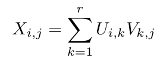
RMS 可以表示为：
因此，\(\operatorname{RMS}(X)=\sqrt{r/(mn)}\)。对于矩阵满秩这一常见情况，\(r=m\)，故 \(\operatorname{RMS}(X)=\sqrt{1/n}\)。
Muon 与 AdamW 之间一致的更新 RMS。如第 2.2 节讨论，我们希望匹配 Muon 和 AdamW 优化器的更新 RMS。我们通过小规模模型实验验证这一点。将 Muon 的更新 RMS 分别设为 [0.05, 0.1, 0.2, 0.4, 0.8]，以 AdamW 为基线。表 8 报告了 2k 步（约 2B 个 token）时的 loss 和代表性权重矩阵 RMS。结果显示，0.2 RMS 与 0.4 RMS 性能相近，且显著优于其他设置。这些发现与我们的经验观察一致：AdamW 的更新 RMS 位于 0.2～0.4 范围。我们选择将 Muon 的更新 RMS 控制为 0.2。
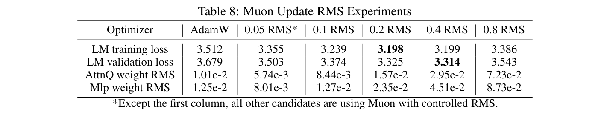
表 8：Muon 更新 RMS 实验。* 除第一列外，所有其他候选均使用受控 RMS 的 Muon。
为确保实验公平与准确，我们在自有数据集上开展一系列实验，得出对 AdamW 最优的 scaling law 参数。这包括在受限计算预算（FLOPs，\(C\)）下，确定最优模型规模 \(N\)、训练 token 数 \(D\)、学习率 \(\eta\)、batch size \(B\)（Kaplan 等，2020；Hoffmann 等，2022；Bi 等，2024）。表 9 展示了系统参数搜索过程的结果。
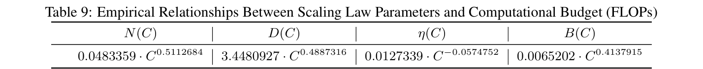
表 9：scaling law 参数与计算预算（FLOPs）之间的经验关系。
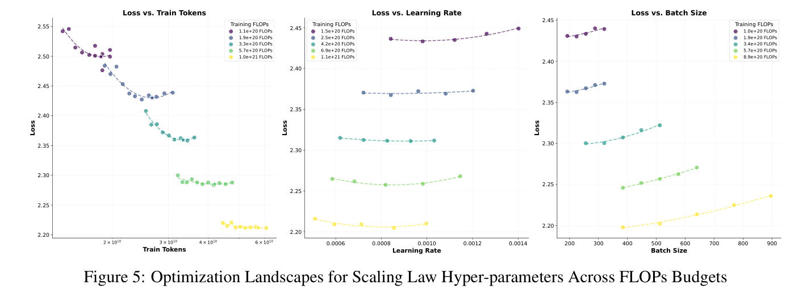
图 5：不同 FLOPs 预算下 scaling law 超参数的优化景观。
超参数搜索。为系统识别 AdamW 基线的最优 scaling law 超参数，我们采用多阶段搜索流程。首先，选择多个计算预算（FLOPs 水平），根据既有研究的经验准则初始化模型规模、学习率和 batch size。在每个固定 FLOPs 约束下，我们改变模型规模 \(N\)，同时反向调整训练 token 数 \(D\)，以保持 \(C=6ND\)，从而探索模型容量与数据效率的权衡。每个配置均训练至收敛，记录验证 loss，以确定 \(N\) 和 \(D\) 的 Pareto 最优组合。随后，在固定最优 \(N-D\) 对的情况下，通过网格搜索细化学习率和 batch size，确保各配置的稳定性与收敛。为减轻局部极小值的影响并增强稳健性，该迭代过程重复 2–3 次，逐步缩小超参数空间。
图 5 进一步展示这一优化过程，给出不同 FLOPs 预算下，loss 关于训练 token 数、学习率与 batch size 的变化景观。每条碗状曲线表示特定 FLOPs 水平的 loss 曲面，其明确的全局最小值对应最优超参数配置。
Muon 与模型架构无关。我们使用与 DeepSeek-AI 等（2024）所描述的 Deepseek-V3-Small 类似的模型，因为它具有开放权重，是一个强基线。我们对 Moonlight 模型做了几处小修改，列示如下：
多 token 预测（MTP）。在我们的实验中，MTP 未显示出对预训练的显著收益。为简单起见，Moonlight 模型不引入 MTP 层。
auxfree 偏置更新。在 DeepSeek-AI 等（2024）中，auxfree 偏置更新为 \(b_i=b_i+u\times\operatorname{sign}(e_i)\)，其中 \(u\) 为更新率，\(b_i\) 为第 \(i\) 个专家的偏置，\(e_i\) 为专家的违约比例。我们将更新规则略微修改为 \(b_i=b_i+u\times(\operatorname{sign}(e_i)-\operatorname{sign}(e).\operatorname{mean}())\)，其中 \(\operatorname{sign}(e).\operatorname{mean}()\) 是所有专家违约比例符号的平均值，以控制偏置的大小，同时不改变 topk 选择逻辑。
门控缩放因子。Deepseek-V2-Lite 未使用门控缩放因子，Deepseek-V3 使用 2.5 的缩放因子。我们使用 2.446 的缩放因子，以使输出 RMS 与稠密模型相近。计算我们门控缩放因子的代码见图 6。
没有 loss spike 或 gradient 范数尖峰。Moonlight 的训练过程非常平稳，我们没有遇到任何 loss spike 或 gradient 范数尖峰。loss 与 gradient 范数曲线见图 7（Moonlight 为蓝色，使用 AdamW 训练的 Moonlight-A 为红色）。
最大 attention logit。训练期间，我们观察到，尽管训练 loss 与 gradient 范数在整个过程中保持稳定，但最大 attention logit（计算为全局 batch 中最大的单个 logit 值，续下页）……
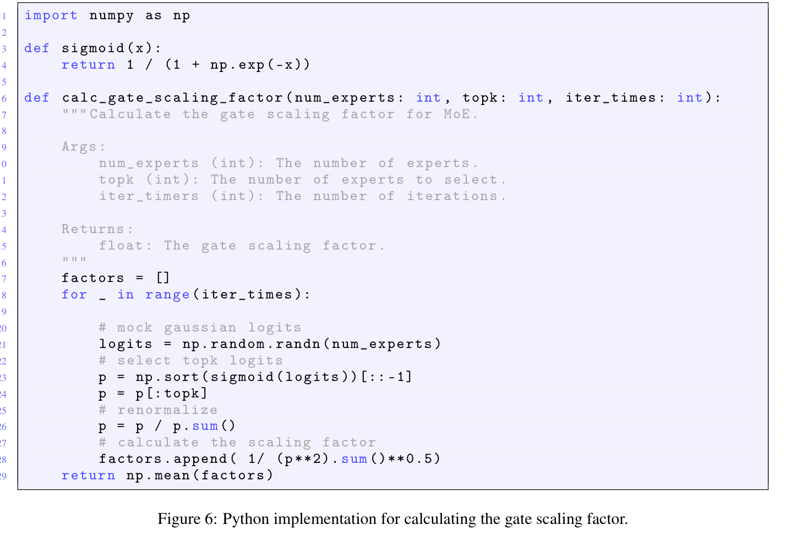
图 6：计算门控缩放因子的 Python 实现。
图中代码说明：calc_gate_scaling_factor 计算 MoE 的门控缩放因子。参数 num_experts 为专家数量，topk 为选取专家数量，iter_times 为迭代次数；返回浮点门控缩放因子。各注释依次表示模拟高斯 logits、选取 topk logits、重新归一化、计算缩放因子。
（接上页）……在训练初期的特定层中呈现明显上升趋势，超过 100 的阈值。值得注意的是，相比其他优化器，AdamW 在控制这一指标上展现出更健康的行为。
为进一步研究这一现象的影响，我们引入“大 attention logits 比例”指标，定义为一个 batch 中超过 100 的 attention logits 所占比例。如图 7 所示，这一比例始终较低（约 \(10^{-4}\)），说明极大的 logit 值是稀少的。此外，最大 logit 值随训练推进逐渐下降，表明优化动态趋于更健康。
RMSNorm gamma 权重衰减。对 RMSNorm gamma 参数应用权重衰减对于保证训练稳定性至关重要，因为它可以有效防止各层输出 RMS 过高。
表 10 对比了我们的 Moonlight 模型（使用 Muon 优化）与使用更多计算资源训练的公开模型，包括 LLama3.1-8B（Grattafiori 等，2024）、Gemma-9B（Gemma Team 等，2024）和 Qwen2.5-7B（Yang 等，2024）。图 8 展示了 Moonlight 与领域内可比模型的 GSM8k 性能基准。
我们绘制每个矩阵奇异值按降序排列的折线图，并用最大奇异值归一化，以可视化权重矩阵的奇异值分布。如图 9 和图 10 所示，我们发现对于大多数权重矩阵，Muon 优化后的奇异值分布比 AdamW 更平坦，进一步证实 Muon 可以提供更多样更新谱的假设。
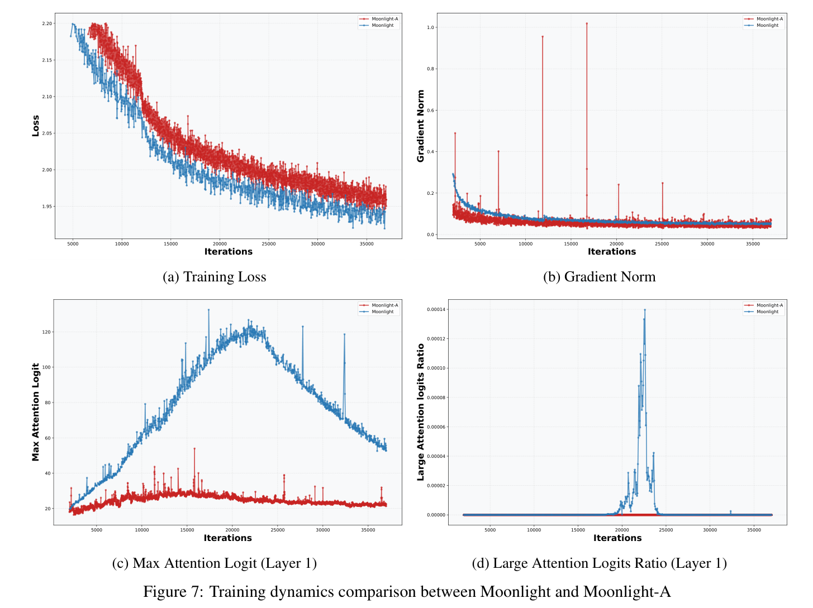
图 7：Moonlight 与 Moonlight-A 的训练动态比较。（a）训练 loss；（b）gradient 范数；（c）最大 attention logit（第 1 层）；（d）大 attention logits 比例（第 1 层）。
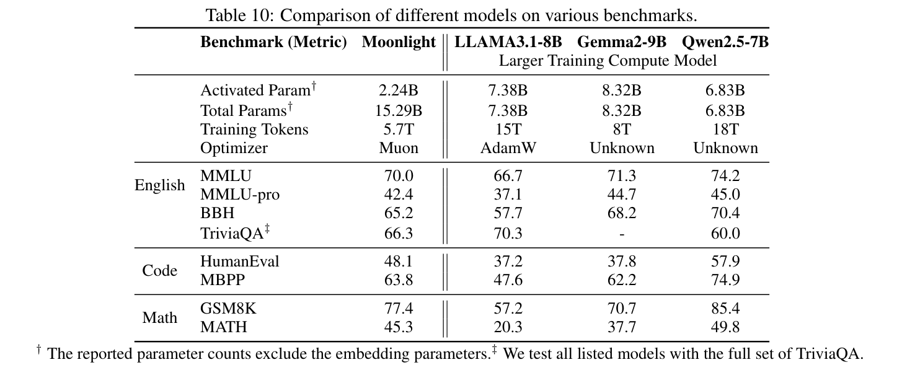
表 10：不同模型在各基准上的对比。† 报告的参数数量不包含 embedding 参数。‡ 我们在完整 TriviaQA 集上测试所有列出的模型。
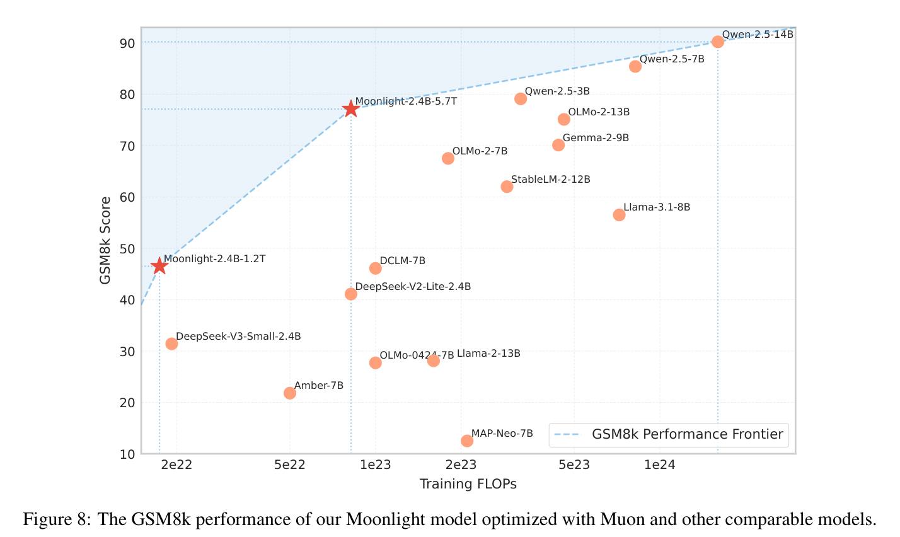
图 8：使用 Muon 优化的 Moonlight 模型与其他可比模型的 GSM8k 性能。
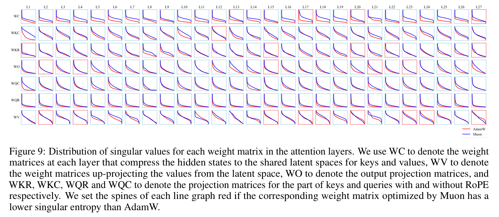
图 9：attention 层中各权重矩阵的奇异值分布。我们用 \(W^C\) 表示各层将隐藏状态压缩至 key 和 value 的共享潜在空间的权重矩阵，用 \(W^V\) 表示将 value 从潜在空间向上投影的权重矩阵，用 \(W^O\) 表示输出投影矩阵，并分别用 \(W^{KR},W^{KC},W^{QR},W^{QC}\) 表示 key 和 query 中使用与不使用 RoPE 的部分所对应的投影矩阵。如果相应权重矩阵经 Muon 优化后的奇异值熵低于 AdamW，我们将该折线图的边框设为红色。
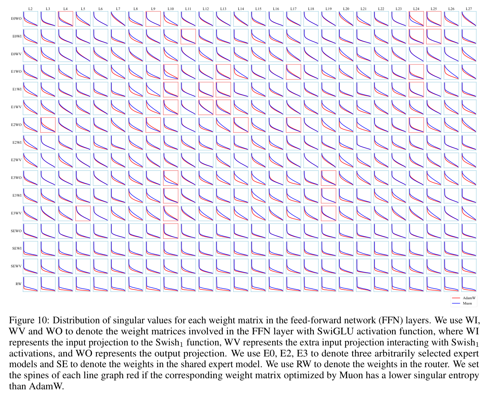
图 10：前馈网络（FFN）层中各权重矩阵的奇异值分布。我们用 \(W^I,W^V,W^O\) 表示采用 SwiGLU 激活函数的 FFN 层涉及的权重矩阵，其中 \(W^I\) 表示输入至 \(\operatorname{Swish}_1\) 函数的投影，\(W^V\) 表示与 \(\operatorname{Swish}_1\) 激活交互的额外输入投影，\(W^O\) 表示输出投影。我们用 E0、E2、E3 表示任意选取的三个专家模型，用 SE 表示共享专家模型中的权重，用 RW 表示 router 的权重。如果相应权重矩阵经 Muon 优化后的奇异值熵低于 AdamW，我们将该折线图的边框设为红色。